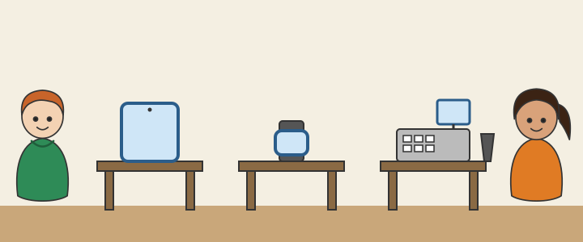

Informatiksysteme im Alltag
Mit einem KI-Tutor lernen
Ein KI-Tutor erklärt dir diese Seite und hilft dir bei den Aufgaben. Wähl deinen Assistenten:
Mit Claude öffnen Mit ChatGPT öffnen Mit Mistral Vibe öffnen
Du nutzt dein eigenes Konto beim Anbieter. Der Assistent ist kein Angebot von lernapps.net: lernapps liefert nur Inhalte und Aufgaben. Die Wahl gilt für alle Seiten, nur auf diesem Gerät.
Station 1: Was gehört in die Ausstellung?

© CC-BY-4.0Die ersten drei Geräte der Ausstellung „Der gläserne Computer“, von außen.
Die Computer-AG baut die Ausstellung „Der gläserne Computer“. Jona und Selin aus der Klasse 6b, beide 11 Jahre alt, sammeln Geräte dafür und zeigen sie später den Besuchern. Auf den Tischen liegen schon ein Tablet, eine Smartwatch und eine Kasse. Selin bringt ein Fahrrad, eine Spielkonsole und ein Lineal. Was davon passt in die Ausstellung?
Auf dieser Seite lernst du, Informatiksysteme in deinem Alltag zu erkennen.
Aufgabe
Lösung
In der Spielkonsole richtige Antwort
In der Konsole rechnet ein Computer aus, wie sich die Figuren im Spiel bewegen.
Im Fahrrad
Ein einfaches Fahrrad rechnet nichts, zählt nichts und merkt sich nichts.
Im Lineal
Mit dem Lineal misst du selbst. Es rechnet nichts und merkt sich nichts.
Nur in der Spielkonsole arbeitet ein Computer. Sie gehört in die Ausstellung.
Woran du ein Informatiksystem erkennst
- Informatiksystem
Ein Gerät, in dem ein Computer nach einem Programm arbeitet. Ein Programm ist eine genaue Anleitung für den Computer. Zu jedem Informatiksystem gehören Teile zum Anfassen und Programme.
Du merkst es oft daran: Das Gerät rechnet, zählt oder merkt sich etwas. Ein Smartphone, eine Spielkonsole und eine Kasse sind Informatiksysteme. Was Hardware und Software sind, lernst du an der nächsten Station.
Merke
Ein Bildschirm ist kein Muss. Auch in einer Waschmaschine oder in einem Auto stecken kleine Computer. Sie sind nur gut versteckt.
Strom allein reicht nicht. Eine einfache Taschenlampe hat Strom, aber keinen Computer. Der Schalter macht das Licht nur an oder aus.
Mitmachen: Gerätesuche
Eine Suche ohne Computer, im Klassenzimmer und zu Hause
- Nimm ein Blatt und mach zwei Spalten: „Informatiksystem“ und „kein Informatiksystem“.
- Schau dich im Klassenzimmer um. Schreib jedes Gerät mit Strom in eine Spalte.
- Frag bei jedem Gerät: Rechnet es, zählt es oder merkt es sich etwas?
- Mach zu Hause weiter: Küche, Bad, Kinderzimmer.
- Vergleicht eure Listen in der Klasse. Wer hat ein verstecktes Informatiksystem gefunden?
Üben an der Station
Aufgabe
Lösung
E-Book-Reader richtige Antwort
Ein Computer im E-Book-Reader hebt viele Bücher auf und zeigt dir jede Seite.
Waschmaschine mit Anzeige richtige Antwort
Ein kleiner Computer steuert Wasser, Wärme und Zeit nach dem Programm, das du wählst.
Einfacher Föhn
Der Föhn hat Strom, aber keinen Computer. Er bläst nur, solange der Schalter an ist.
Schere
Eine Schere hat weder Strom noch einen Computer.
E-Book-Reader und Waschmaschine arbeiten mit einem Computer und einem Programm.
Aufgabe
Lösung
Richtige Antwort: Die Aussage stimmt nicht.
Falsch. Auch ohne Bildschirm kann ein Computer im Gerät arbeiten, zum Beispiel im Auto oder in einer Spielzeug-Roboterfigur.
Aufgabe
Lösung
Richtige Antwort: Kasse – zählt die Preise zusammen; Smartwatch – zählt deine Schritte; Waschmaschine – steuert Wasser und Zeit; Spielkonsole – bewegt die Figuren im Spiel
Jedes dieser Geräte hat einen Computer mit einer eigenen Aufgabe. Licht machen kann auch eine einfache Taschenlampe ohne Computer.
Aufgabe
Drei Beispielaufgaben, jede mit ihrer Lösung:
Aufgabe Nr. 1
Jona hält ein neues Schild hoch: Fahrrad ohne Motor. Ist das ein Informatiksystem? Antworte mit ja oder nein.
- ja
- nein
Tipp
Strom allein reicht nicht, und ein Bildschirm ist kein Muss.
Lösung
- Ein Fahrrad ohne Motor hat keinen Computer. Es rechnet, zählt und merkt sich nichts.
Richtige Antwort: nein
Aufgabe Nr. 2
Jona hält ein neues Schild hoch: Spielkonsole. Ist das ein Informatiksystem? Antworte mit ja oder nein.
- ja
- nein
Tipp
Strom allein reicht nicht, und ein Bildschirm ist kein Muss.
Lösung
- In der Konsole rechnet ein Computer aus, wie sich die Figuren im Spiel bewegen.
Richtige Antwort: ja
Aufgabe Nr. 3
Jona hält ein neues Schild hoch: Schere. Ist das ein Informatiksystem? Antworte mit ja oder nein.
- ja
- nein
Tipp
Strom allein reicht nicht, und ein Bildschirm ist kein Muss.
Lösung
- Eine Schere hat keinen Computer. Sie schneidet nur, wenn du drückst.
Richtige Antwort: nein
Geschafft: Die Ausstellung hat ihre Geräte. An der nächsten Station schaut ihr, was in jedem Gerät zum Anfassen ist und was nicht.
Fehler gefunden oder eine Idee für diese App?